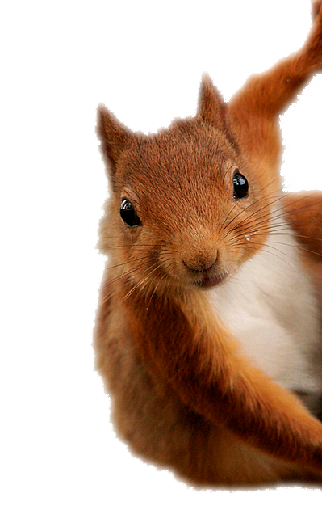

<div id="why" class="container-fluid fondo3">
  <div class="row">
    <div class="col-md-7 col-xs-12 container-fluid">
      
      <div class="card" style="width: 18rem;">
        
        <div class="card-body">
          <h5 class="card-title">Why do it?</h5>
          <p class="card-text">Camping can be one of the best experiences of your life. Let's see why.</p>
          <button type="button" class="btn btn-default" data-toggle="modal" data-target="#exampleModalLong">
             thirteen reasons...
          </button>
        </div>
      </div>


     
      
      <!-- Modal -->
      <div class="modal fade" id="exampleModalLong" tabindex="-1" role="dialog" aria-labelledby="exampleModalLongTitle" aria-hidden="true">
        <div class="modal-dialog" role="document">
          <div class="modal-content">
            <div class="modal-header">
              <h5 class="modal-title" id="exampleModalLongTitle">thirteen reasons...</h5>
              <button type="button" class="close" data-dismiss="modal" aria-label="Close">
                <span aria-hidden="true">&times;</span>
              </button>
            </div>
            <div class="modal-body">      

                <h5>
                 <strong>1. You will save a lot, but a lot of money.</strong>
                </h5>
               <p>Camping is the cheapest vacation that can exist. You do not pay for hotel, you do not pay for food in a restaurant, and you
              simply in charge of satisfying the basic needs of sleeping in a tent and eating outdoors.</p>
              <hr size="10" color="white">


              <h5>
                <strong>2. You will have the best dawns of your life, being awakened only by the light of the sun, the singing of the birds and the
                sound of the river, if you are close to one.</strong>
              </h5>
              <p>This can only compete with the beauty of the sunsets</p>
              <hr size="10" color="white">

              <h5>
                <strong>3. Your body will feel "invigorated" and you will be able to think more clearly.</strong>
              </h5>
              <p>You'll find that going outdoors, and camping specifically, will improve your physical and mental health in ways you never
              thought of. Many scientific studies show how well it makes us, emotionally and intellectually, to get in touch with nature.</p>
              <hr size="10" color="white">

              <h5>
                <strong>4. You will have incredible stories and memories with your family or friends.</strong>
              </h5>
              <p>Acampar es una de las mejores maneras de reforzar lazos en cualquier relación humana que tengas. Yo por ejemplo, tengo recuerdos
              imborrables de cuando acampaba de niño con mi familia… cosas que ningún videojuego jamás podrá reemplazar. También tengo
              la suerte de haber podido acampar con amigos, con las miles de anécdotas que nacen de este tipo de experiencias compartidas.</p>
              <hr size="10" color="white">

              <h5>
                <strong>5. Aprenderás miles de cosas nuevas y prácticas.</strong>
              </h5>
              <p>Did you ever want to learn to cook in a bonfire or on stones? What about sailing in a canoe or kayak? Do you think you could
              build a tent and engineer it to survive a stormy night? Do you know how it feels to swim in a river or a lake of crystal
              clear water? I am sure that camping you will learn some of these things and more.</p>
              <hr size="10" color="white">

              <h5>
                <strong>6. You will have a better vision ... almost almost like a cat's.</strong>
              </h5>
              <p>Even if it sounds crazy, camping opens your eyes, literally. You quickly learn to see and walk in the dark, something that
              we are not used to, since we are always with electric light in our homes. It is likely that your balance and your sense of
              hearing and smell will also be sharpened.</p>
              <hr size="10" color="white">

              <h5>
                <strong>7. You will get a moment just for you, disconnected from all electronic devices.</strong>
              </h5>
              <p>While the phone, tablets or computers are very useful and are part of our daily lives, sometimes we are so absorbed by these
              "aparaticos" and their virtual reality, that we forget all the real world that exists out there waiting for be explored In
              any case, do not despair. There are more and more solar chargers that you can take to keep your phone on battery when you
              camp (and many campsites usually have electricity).</p>
              <hr size="10" color="white">

              <h5>
                <strong>8. You will know spectacular landscapes that you did not know existed (even near the city where you live).</strong>
              </h5>
              <p>It's not just about going camping in the Himalayas or Thailand. Especially in Latin America, I can affirm that there are
              spectacular places full of nature near the cities. Without even having to pay a plane ticket, dare to discover mountains,
              rivers and lakes near where you live.</p>
              <hr size="10" color="white">

              <h5>
                <strong>9. You will discover new flavors and the food will taste better, for two reasons ...</strong>
              </h5>
              <p>First of all, when you camp you probably want to try new recipes, like the famous marshmallows or just an egg made on a hot
              stone. In addition, with all the activities and physical effort that you will do during the day, when the time for lunch
              arrives you will be extremely tired and hungry, so you will remember the phrase that "the best sauce is hunger".</p>
              <hr size="10" color="white">

              <h5>
                <strong>10. You will improve your narrative skills by telling stories around campfires.</strong>
              </h5>
              <p>For those of us who grew up in the 90s, do you remember the series "Are you afraid of the dark?" A group of friends sat around
              a fire to tell stories of suspense and fear. In my opinion, it is really worth leaving for a while the complex audio-visual
              stories to which we are accustomed, and going back to something as traditionally human as sitting around the fire and sharing
              stories (true or false, or something between the two).</p>
              <hr size="10" color="white">

              <h5>
                <strong>11. You will know deep aspects of your loved ones (family, couple or friends).</strong>
              </h5>
              <p>As Laura Lazzarino says, when you're in a tent you can not slam the door. It is a great moment to talk long and hard, to
              understand each other, and if necessary, to reconcile as well.</p>
              <hr size="10" color="white">

              <h5>
                <strong>12. You will sleep like a baby.</strong>
              </h5>
              <p>Do you have trouble sleeping? Light sleep or insomnia? Then camping will fall like a hot bath to a baby. The combination
              of the fatigue of the day with the true darkness of the night, will guarantee a restful sleep like the one you have seldom
              had.</p>
              <hr size="10" color="white">

              <h5>
                <strong></strong>
              </h5>
              <p>That is, the night sky filled with thousands of bright stars. Nothing more, nothing less.</p>
              <hr size="10" color="white">

              
            </div>
          </div>
        </div>
      </div>


    </div>
    <div class="container-fluid col-md-5 col-xs-12">
      <div class="container-fluid">
        
      </div>
    </div>
  </div>
</div>